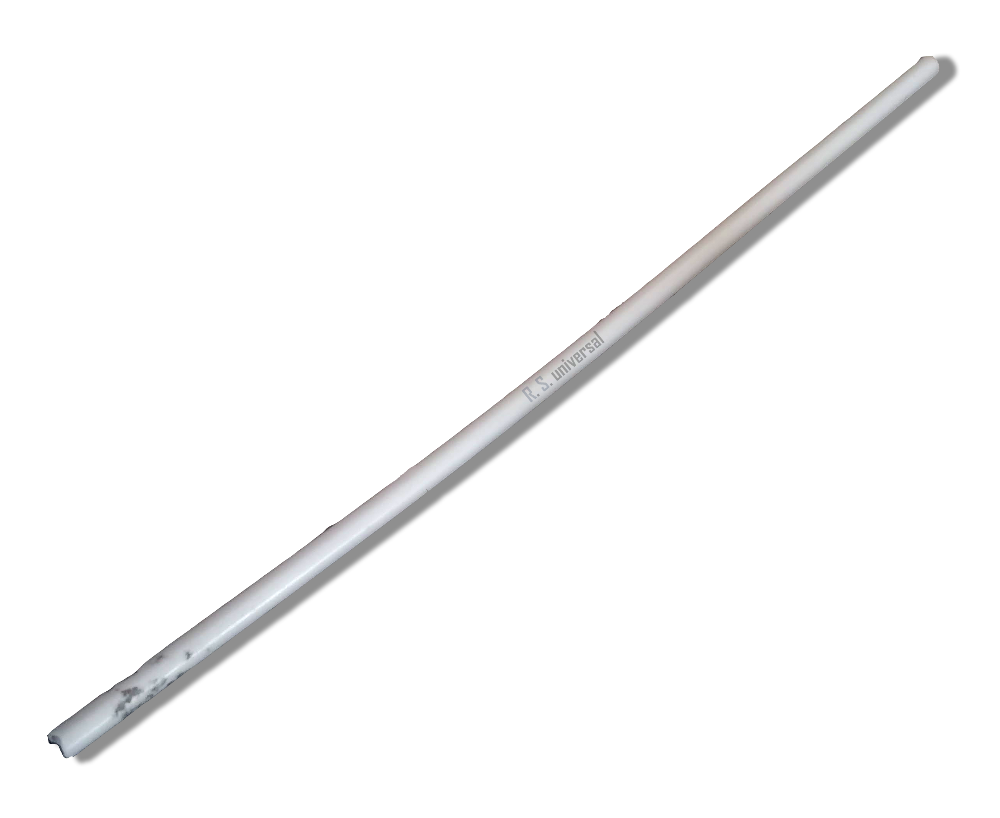
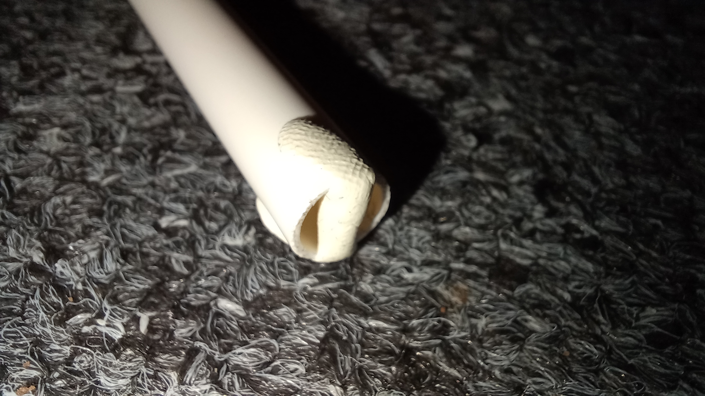
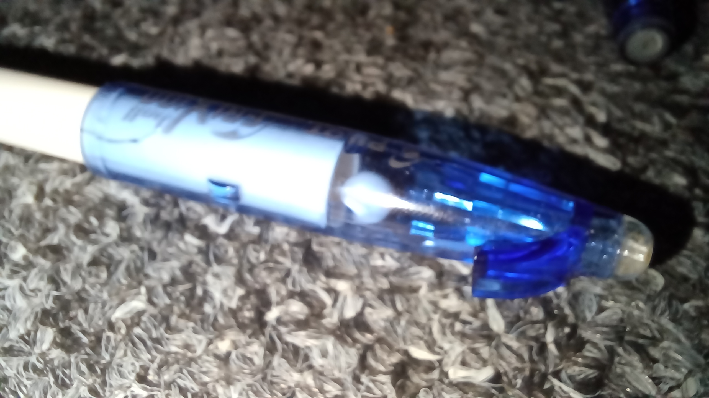
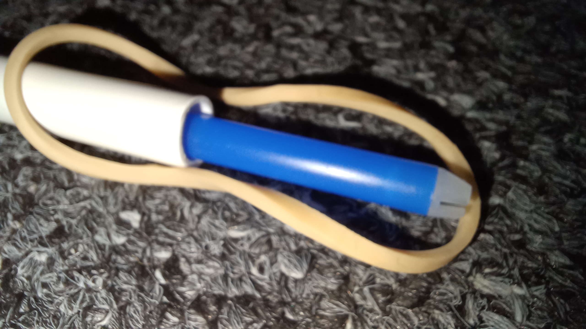

Unistick MK. II-A
L/S Unistick MK. II-PLP (PLastic Projectile / na Plastové Projekity) je jednoduchá airsoftová zbraň vytvořena z R.S. Unistick MK. II

aktuální základní součástky
Historie

Celý tento projekt je odkazem na mnou tzv. Původní tyčce. Původní tyčka bylo plastová trubka pocházející ze sušáku Leifheit Quartett 20, když se sušák vyhazoval, ulomila se. Za svůj "život" se tyčka těšila spoustě využítí, jedním z nich bylo její využítí jako model pro R.S. Unistick M. II, univerzální plastové tyčky pro projekt R. S. Universal. Bohužel někdy na konci roku 2022 se Původní tyčka ztratila a už nikdy nebyla nalezena.
Na Původní tyčce byly objeveny první základní principy airsoftového využití (principy flusačky a kouzlné hůlky)
Principy střelby
Flusačka + lepící guma v zadu

Tento princip (action) asi nepotřebuje moc popis, strčíte plastový projektil ze předu a vyfouknete ji zadem. Na tento princip využijeme lepící gumy pro částečné zalepení zadu aby se tam projektil usadil a my ho mohli vyfouknout.
Kouzelná hůlka (throw-action)
Tento princip je založen na podobném principu jako flusačka, akorát že místo foukání s trubkou zbrkle vrhneme vpřed (jako s kouzelnou hůlkou)
Pen-cap action

Princip víčka od pera je založen na vytvořením závěru nasázením dostatečně uzkého víčka na zadní otvor. Projektil můžeme vložit buď předem nebo ho vložíme do víčka před nasunutím (takže něco jako primitivní zásobník).
push-action

Tento princip střelby využívá náplně do pera v podstatě jako mrštící sílu pro projektil. Nejprve do zadu nasuneme náplň a tam ji držíme, potom do předu vložíme projektil a pro vystřeelní silně vrazíme náplň dovnitř. Alternativně můžeme samotnou náplň využít jako projektil.
Prak

Pro vytvoření "praku" si na vršek zadu trubky přidržíme gumičku a projektil "v tomto případě bude pouze fungovat něco dělšího, jako právě náplň do pera) a pak už s tím zacházime jako s normálním prakem.
L/S Technologies and Research © 2026, Opovaž se z této stránky něco ukrást!! xd